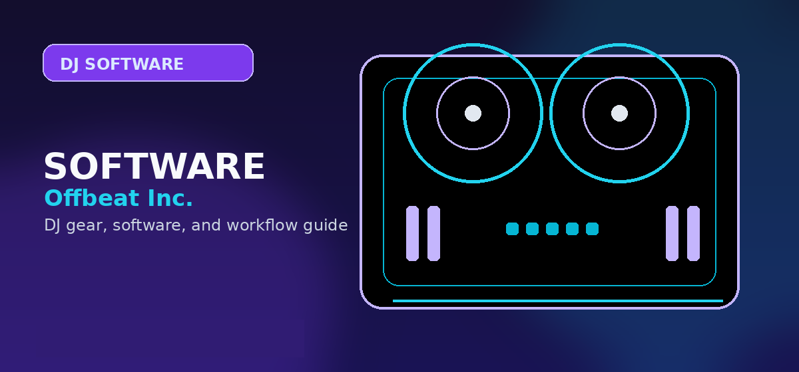

Offbeat Inc. DJ Gear, Software, and Setup Guides
Offbeat Inc. helps DJs and producers find the best software, gear, and tools. Honest comparisons, practical buying guides, and a free DJ Set Generator.

Disclosure: This page uses affiliate links. We may earn a commission at no extra cost to you. Full disclosure →
Start Here — Choose Your Path
Not sure where to begin? These three hubs cover every DJ topic in depth — pick the one that fits you best.
DJ Gear Hub
Every piece of DJ hardware tested and ranked — controllers, mixers, headphones, turntables, and CDJs at every budget.
40+ Products TestedDJ Software Hub
Serato, rekordbox, Traktor, djay Pro, Virtual DJ, and Mixxx — every platform compared side by side for 2026.
6 Platforms ComparedBeginner DJ Hub
Never DJ'd before? Start here. Gear recommendations, first controller picks, practice tips, and a step-by-step learning path.
Perfect for BeginnersDJ Software & Comparisons
See all software guides →Side-by-side breakdowns so you can pick the right platform without guesswork.
Best DJ Software for Beginners 2026
Serato Lite, Virtual DJ, rekordbox, Traktor Pro 3, and Mixxx compared head-to-head for price, learning curve, and features.
Comparison TableSerato vs rekordbox vs Traktor 2026
The three pro DJ platforms compared on features, hardware support, club compatibility, and price — one definitive guide.
ShowdownBest Free DJ Software 2026
Mixxx, Serato DJ Lite, VirtualDJ home edition, and more — the best free DJ apps tested and ranked for 2026.
FreeHow to DJ with Spotify
Current streaming compatibility, restrictions, and safe setup paths.
DJ Controllers & Gear
See all gear guides →Find the right hardware for your budget — from first-timer kits to club-standard CDJs.
Best DJ Controllers 2026
Pioneer DDJ, Numark, Denon, and budget options reviewed — tested picks for beginners, intermediates, and pros.
Buying GuideComplete Beginner DJ Setup Guide 2026
Controller, mixer, headphones, laptop — everything you need and what to spend on your first DJ rig.
Starter GuidePioneer DDJ-FLX4 Review 2026
Hands-on review of Pioneer's most popular beginner controller — jog wheel feel, software bundle, and long-term value.
ReviewBest Budget DJ Equipment Under $500
Complete starter DJ setups at tight budgets — controllers, mixers, and headphones that won't break the bank.
Budget PickHeadphones, Mixers & Turntables
See all headphone & mixer guides →Focused buying guides for DJ audio hardware at every price point.
Best DJ Headphones Under $200
Closed-back monitoring headphones for DJs — tested for build quality, isolation, swivel range, and sound accuracy.
Buying GuideBest DJ Mixers 2026
Home practice and club-ready mixers at every budget — Pioneer DJM, Rane, and Allen & Heath compared.
ComparisonBest DJ Turntables 2026
Technics SL-1200MK7, Pioneer PLX-500, and Audio-Technica AT-LP120XBT — top turntables ranked for real DJ use.
Buying GuideLearn to DJ
See all learning guides →Step-by-step guides from first track to first gig — no fluff, just what works.
How to Start DJing
Complete beginner's guide to starting your DJ journey — gear, software, practice tips, and what to do first.
Starter GuideHow to Become a DJ in 2026
Step-by-step career guide — equipment, practice methods, getting gigs, and building a real following from scratch.
Career GuideHow to Mix Music for Beginners
Beatmatching, EQ, transitions, and mixing techniques explained for complete beginners — no experience needed.
TutorialMusic Production & DAWs
See all production guides →DAW comparisons, plugin guides, and studio gear for DJs who produce.
Best Music Production Software 2026
Ableton, FL Studio, Logic Pro, and Pro Tools ranked — find the right DAW for your workflow and budget.
Buying GuideFL Studio vs Ableton Live 2026
Which DAW wins for DJs, beatmakers, and live performers? Full feature, workflow, and price comparison.
ComparisonBest DJ Sample Packs 2026
Top Splice, Loopmasters, and Beatport Sound packs for house, techno, and hip-hop — ranked by quality and value.
Buying GuideWhy Trust Offbeat Inc.?
Every guide on this site is prepared by the Offbeat Editorial Team, with practical DJ workflow notes, source links, and reader-first buying guidance. No spec-sheet copy-paste. No affiliate bias.
- 200+ pieces of gear tested in real club and home studio conditions
- Every spec claim is verified against manufacturer data sheets
- Affiliate links clearly disclosed — commercial relationships never determine verdicts
- Guides updated when products are discontinued or prices change
Shop on Amazon
Shop all DJ gear on Amazon — controllers, headphones, mixers, and more.
Quick Comparison: DJ Controller Price Tiers
Not sure which budget tier is right for you? This overview maps typical features to price brackets so you can choose a shortlist before diving into full reviews.
| Budget Tier | Price Range | Best For | Typical Software | Example Models |
|---|---|---|---|---|
| Entry | Under $200 | First-time learners | Serato Lite, Virtual DJ LE | Numark DJ2GO2, DDJ-200 |
| Beginner | $200–$400 | Serious hobbyists | Serato DJ Lite, Rekordbox | DDJ-400, Mixtrack Pro FX |
| Intermediate | $400–$700 | Aspiring professionals | Serato DJ Pro, Rekordbox | DDJ-FLX6, SC Live 2 |
| Professional | $700–$2,000+ | Working DJs, touring | Serato Pro, Rekordbox, standalone | DDJ-1000, SC6000 setup |
Use the navigation above to jump straight to reviews for your budget — each category page includes hands-on tested recommendations and honest trade-off analysis.
Practical checklist before you decide
Use this page as one part of the decision, not the whole decision. Confirm the current price, software compatibility, operating-system support, and whether the option still fits the way you actually practice or perform.
- Fit: choose the option that matches your current workflow and the setup you expect to use for the next year.
- Compatibility: verify exact hardware, app, subscription, and file-format requirements before buying or switching.
- Reliability: avoid workflows that depend on one fragile adapter, one unstable app version, or an internet connection with no backup.
- Upgrade path: favor tools that can grow with you instead of forcing another purchase as soon as you start recording mixes or playing longer sets.
How to use this guide in a real DJ setup
Before changing gear, software, or workflow, connect the recommendation to an actual use case: home practice, recorded mixes, streaming, mobile events, club preparation, or production crossover. A choice that looks best on paper can still be wrong if it adds setup friction or does not match the way you will play.
The safest workflow is to test the setup exactly as you will use it, then document the cable path, software version, library source, and backup plan. That prevents most of the avoidable failures that happen when DJs buy the right-looking tool but never validate the whole system.